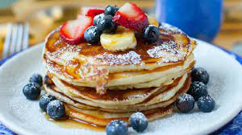

Pancakes Recipe

Description
A stack of warm, fluffy pancakes are sure to bring smiles to even
the groggiest early morning risers. You can also prepare pancakes
in advance and store in the freezer to be reheated in the
microwave for a quick breakfast when you’re in a hurry.
Ingredients
- ¾ cup (175 mL) all-purpose flour
- ¼ cup (60 mL) cornstarch
- 2 tbsp (30 mL) wheat or oat bran or wheat germ (optional)
- 1 tbsp (15 mL) granulated sugar
- 1 1/2 tsp (7.5 mL) baking powder
- ½ tsp (2.5 mL) baking soda
- ¼ tsp (1.25 mL) salt
- 2 eggs
- 1 cup (250 mL) buttermilk or soured 2% milk*
- 2 tbsp (30 mL) vegetable oil
- ½ tsp (2.5 mL) vanilla extract
- Fresh berries or chopped fruit (optional)
- Maple syrup (optional)
Instructions
- Stir flour, cornstarch, bran (if using), sugar, baking powder, baking soda and salt together in large bowl. Whisk eggs, milk, oil and vanilla in small bowl. Stir egg mixture into dry ingredients just until combined.
- Spray large non-stick skillet with cooking spray. Heat over medium-high heat. Spoon about ¼ cup (50 mL) batter per pancake into pan, spreading batter slightly. Cook until bubbles appear on surface, about 2 minutes. Turn and cook until lightly browned on second side, about 1 minute.
- Serve immediately or keep warm while cooking remaining batter. Serve topped with fresh berries and syrup , if desired.